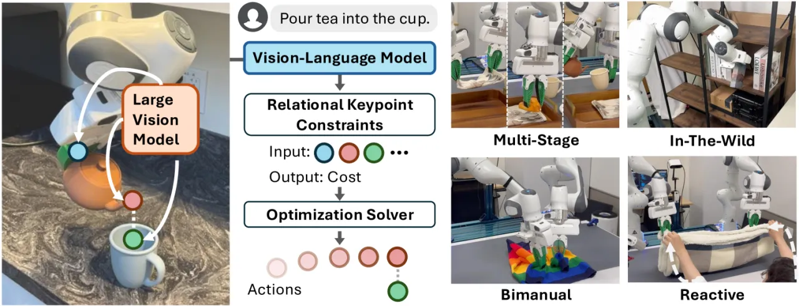
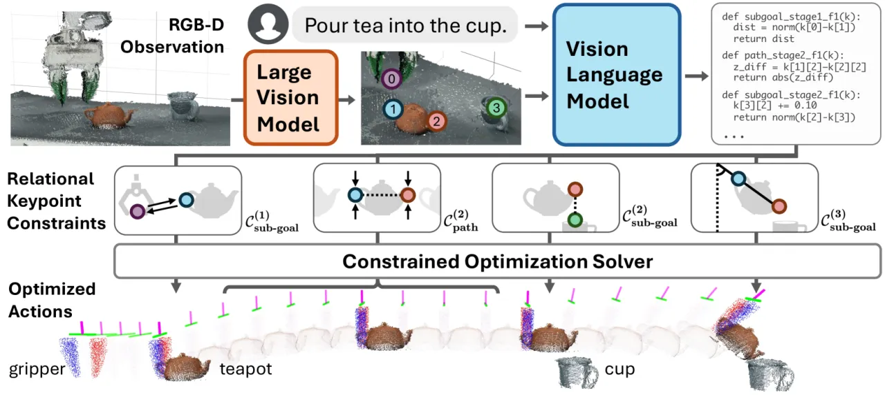
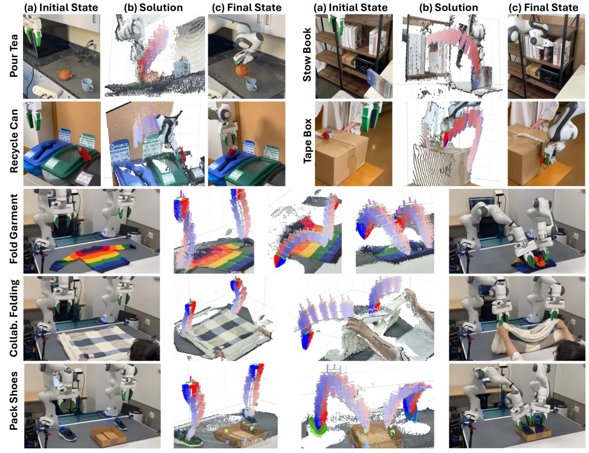
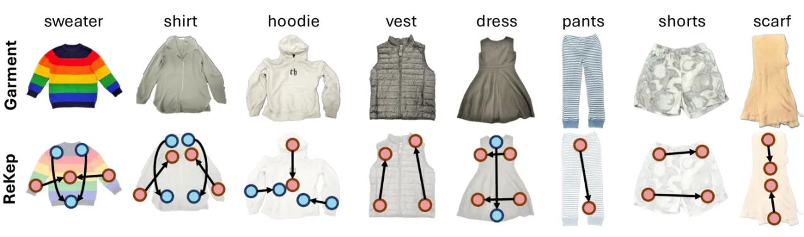

ReKep 把操作任务表示为运行在语义关键点（semantic keypoints）上的一串 Python 约束函数，每个函数把一组 3D 关键点映射为一个数值代价。通过分层优化，这些约束可被现成求解器实时求解为末端位姿序列（SE(3)），构成闭环策略；约束本身则由大视觉模型与 VLM 从自由形式语言指令与 RGB-D 观测自动生成，无需任务专属数据或训练。
把机器人操作任务表示为"关联机器人与环境的约束（constraints）"是一种很有前景的行为编码方式。但一直缺乏一种约束形式，能同时满足三点要求。论文将此凝练为核心问题：
如何构造约束，使其 1) versatile to diverse tasks（适配多样任务）、2) free of manual labeling（无需人工标注）、3) optimizable by off-the-shelf solvers to produce robot actions in real-time（可被现成求解器实时求解为动作）。
ReKep 的答案是：用运行在语义关键点上的 Python 函数来写约束。它天然可微、可组合，既能被 VLM 以代码形式自动生成（解决标注），又能交给通用数值优化器实时求解（解决实时性），还能覆盖 multi-stage、in-the-wild、bimanual、reactive 等多种行为（解决通用性）。

ReKep 表示为把一组环境中的 3D 关键点映射到标量代价的 Python 函数：约束满足即代价 ≤ 0。一个任务被写成一串 ReKep（分为 sub-goal 与 path 两类约束，按 stage 组织）。系统据此构建约束优化问题，通过分层分解只求解"下一个 sub-goal + 到达它的 path"，配合点跟踪（point tracker）形成实时感知-动作闭环。约束由基础模型自动合成。

给定 RGB 图，先用 DINOv2 提取 patch-wise 特征并双线性插值上采样到原图尺寸；用 Segment Anything (SAM) 抽取场景中所有 mask，覆盖相关物体。对每个 mask 内的特征用 k-means（k=5，cosine 相似度） 聚类，取聚类质心作为关键点候选，再借助深度投影到世界坐标系。整个过程无需任务级标注，即可得到与语义相关、跨物体覆盖的关键点集合。
把带编号关键点的图像与自由语言指令一并输入 GPT-4o，让其直接输出 Python 形式的约束程序，指定各阶段关键点应满足的关系（如"壶嘴对齐杯口""保持茶壶竖直"）。这些约束天然作为 Csub-goal / Cpath 序列组织成任务的 stage skeleton。
为实时求解完整问题，论文将其分解为只优化"当前阶段的 sub-goal 位姿 + 到达该 sub-goal 的 path"（伪代码见 Algorithm 1）。所有优化问题用 SciPy 实现、决策变量归一化到 [0,1]：初次用 Dual Annealing + SLSQP（约 1 秒）求全局解，之后基于上一解只跑局部优化器，约 10 Hz 闭环。Sub-Goal 求解还纳入辅助控制代价：scene collision avoidance、reachability、pose regularization、solution consistency，双臂设置下再加 self-collision。
在 轮式单臂平台 与 固定双臂平台 上设计 7 个任务，分别考察 multi-stage (m)、in-the-wild (w)、bimanual (b)、reactive (r) 行为：Pour Tea (m,w,r)、Stow Book (w)、Recycle Can (w)、Tape Box (w,r)、Fold Garment (b)、Pack Shoes (b)、Collaborative Folding (b,r)。每个设置 10 次试验、随机化物体位姿，报告成功率。基线为 VoxPoser；ReKep 评测两个变体：Auto（基础模型自动生成约束）与 Annot.（人工标注约束）。

| Task | VoxPoser | ReKep (Auto) | ReKep (Annot.) |
|---|---|---|---|
| Pour Tea | 0/10 | 3/10 | 8/10 |
| Recycle Can | 3/10 | 6/10 | 8/10 |
| Stow Book | 0/10 | 3/10 | 6/10 |
| Tape Box | 4/10 | 7/10 | 8/10 |
| Fold Garment | 0/10 | 5/10 | 6/10 |
| Pack Shoes | 0/10 | 3/10 | 5/10 |
| Collab. Folding | 0/10 | 4/10 | 7/10 |
| Total | 10.0% | 44.3% | 68.6% |
注：论文命名对应关系为 VoxPoser = 基线，"Auto" = 自动生成 ReKep，"Annot." = 人工标注 ReKep（即上表第 3、4 列均为 ReKep 变体）。
| Task (Dist.) | VoxPoser | ReKep (Auto) | ReKep (Annot.) |
|---|---|---|---|
| Pour Tea | 0/10 | 2/10 | 4/10 |
| Tape Box | 2/10 | 3/10 | 5/10 |
| Collab. Folding | 0/10 | 3/10 | 5/10 |
| Total | 6.7% | 26.7% | 46.7% |
由于关键点被高频跟踪，系统能对外部扰动做出反应并重规划。ReKep 能正确建模多阶段任务的时序依赖（如壶嘴须先对齐杯口再倒）、利用常识（可乐罐应回收）、构建双臂协同（同时折左右袖）与人机协作（与人一起对齐四角折大毯子），并在受限空间生成运动学上有挑战的行为（Stow Book、把两只鞋密集塞进小体积的 Pack Shoes）。

论文进一步给出系统误差分解（Figure 4），按模块归因失败来源；主要瓶颈与其设计假设一致——集中在关键点跟踪与前向模型近似等感知/建模环节（详见下节 Limitations）。
"the optimization framework relies on a forward model of keypoints based on rigidity assumption" —— 优化框架依赖刚性假设下的关键点前向模型；不过高频反馈闭环在一定程度上放松了对该模型精度的要求。
ReKep 需要准确的点跟踪才能在闭环中正确优化动作，而点跟踪本身因"heavy intermittent occlusions（严重的间歇性遮挡）"而是一项有挑战的 3D 视觉任务。
当前形式假设每个任务有固定的 stage 序列（skeleton）。若要用不同 skeleton 重规划，就需高频运行关键点提出与 VLM，带来相当的计算挑战。